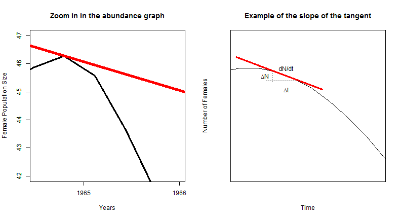
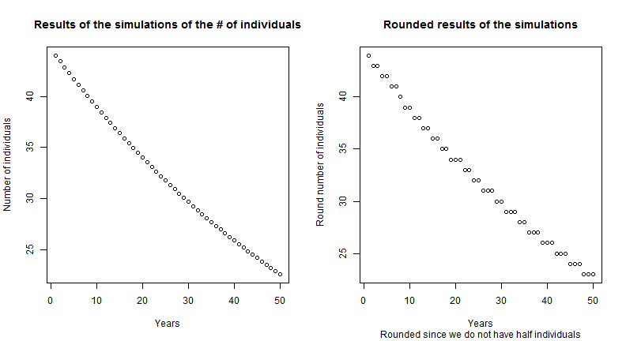
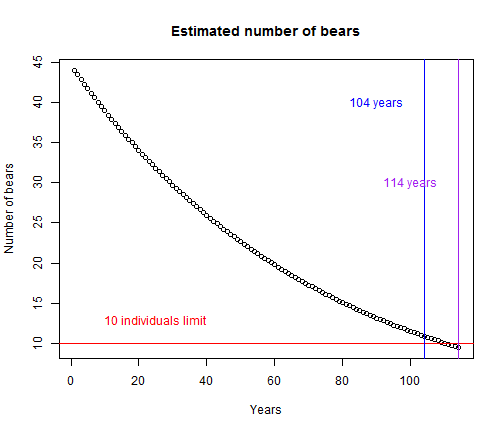
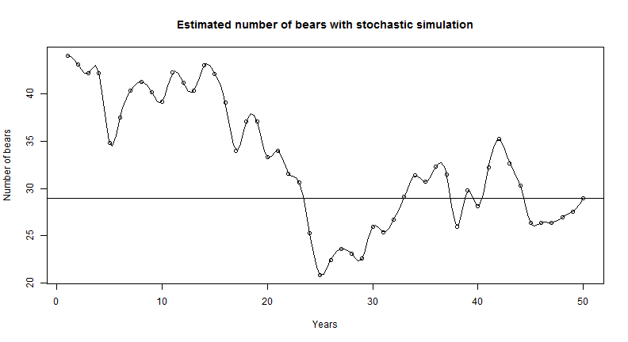

Assignment 2 - Grizzly Bear Population Viability Analysis
gri <- -read.table("Grizzly.csv", header = TRUE, sep = ",")
gri <- gri * (-1)
names(gri)
## [1] "year" "N"
plot(gri$year, gri$N, xlab = "Years", ylab = "Female Population Size")
title("Abundance of female grizzly bears 1959-1978")
lines(gri$year, gri$N)
Figure 1: Abundance of female grizzly bears between 1959 and 1978 in Yelowstone
There is a general decreasing trend in female abundance between 1959 and 1978, altought with some variation (Figure 1). Nevertheless, there is a decrease of more than 10 females in this 20 years period.
rt.tot <- NULL
for (i in 2:length(gri$N)) {
rt = log(gri$N[i]/gri$N[i - 1])
rt.tot <- c(rt.tot, rt)
i <- i + 1
}
rt.tot
## [1] 0.06596 -0.02151 -0.04445 0.04445 -0.02198 0.02198 -0.13976
## [8] -0.02532 0.00000 0.07411 -0.07411 0.05001 -0.02469 -0.19237
## [15] 0.08701 -0.05716 0.13720 -0.10821 -0.02899
m <- mean(rt.tot)
s <- sd(rt.tot)
n <- length(gri$N)
hist(rt.tot)
Figure 2: The histogram of the values of growth rate
q <- quantile(rt.tot, probs = c(0.025, 0.975))
plot(density(rt.tot), xlab = "r's", ylab = "", main = "Mean population growth rate between 1959 and 1978")
abline(v = m, col = "red")
abline(v = q[1], col = "blue")
abline(v = q[2], col = "blue")
text(0.01, 0.9, "Mean - red")
text(0.1, 0.5, "CI - blue")
text(-0.16, 0.5, "CI - blue")
Figure 3: Distribution of the population growth rate, its mean (red), and its 95% Confidence intervales.
A population in time t+1 could be defined as:
Nt+1 = Nt + B - D + I - E Equation 1
Where: N is population size, t is the time step, B is births, D is deaths, I immigration, and E emmigration.
So, in this equation, we are saying that the population in t+1, is equal to the population in time t, plus the births, and the immigration, less the deaths and the emmigrations.
So, the rate of change of the population, could be defined by:
Nt+1 - Nt = Nt - Nt + B - D + I - E Equation 2
Delta_N = B - D + I - E Equation 3
If we assume a closed population, we can assume that I and E are not considered, thus we have:
Delta_N = B - D Equation 4
Considering population growth a continuous variable, which means that time (t) is infinitely small, we can describe population growth as a curve, and thus, as differential equation (dN/dt).
The differential equation in this case (dN/dt) refers to the difference in population size (dN) measured in a very small time interval (dt). And in this case, to any time step t, the population growth is given by the slope of the tangent line in time step t (Figure 4, 5a and b).
plot(gri$year, gri$N, xlab = "Years", ylab = "Female Population Size")
title("Abundance of female grizzly bears 1959-1978")
lines(spline(gri$year, gri$N))
x <- c(41, 1968)
y <- c(1969, 43)
lines(x, y, col = "red")
Figure 4: How the tanget line represents the instantaneous growth rate.
par(mfrow = c(1, 2))
plot(gri$year, gri$N, xlab = "Years", ylab = "Female Population Size", xlim = c(1964.5,
1966), ylim = c(42, 47), type = "n", xaxt = "n")
title("Zoom in in the abundance graph")
lines(spline(gri$year, gri$N), lwd = 3)
axis(1, label = 1964, 1964)
axis(1, label = 1965, 1965)
axis(1, label = 1966, 1966)
axis(2)
x <- c(80, 1968)
y <- c(1969, 43)
lines(x, y, col = "red", lwd = 5)
curve(sin, -2 * pi, 2 * pi, xlim = c(-4.8, -3.8), ylim = c(0.5, 1.15), xaxt = "n",
yaxt = "n", xlab = "Time", ylab = "Number of Females")
title("Example of the slope of the tangent")
xs1 <- c(-4.8, -4.2)
ys1 <- c(1.05, 0.9)
lines(xs1, ys1, col = "red", lwd = 3)
xs2 <- c(-4.55, -4.55)
ys2 <- c(0.985, 0.93)
xs3 <- c(-4.36, -4.6)
ys3 <- c(0.94, 0.94)
lines(xs2, ys2, lty = 3)
lines(xs3, ys3, lty = 3)
text(-4.6, 0.965, expression(paste(Delta, "N")))
text(-4.45, 0.9, expression(paste(Delta, "t")))
text(-4.45, 1, "dN/dt")

Figure 5: a. A detail of how the tanget line represents the instantaneous growth rate; b: A graphical representation of the calculations.
So, the population growth rate, which is a measure of the changes in population size (dN), is measured in a very small time interval (dt), and in closed populations, is a function of the births (B) and the deaths (D), as shown in he equation above (Equation 4).
Since birth rates and death rates are both functions of population size, thus we have:
B = bN and D = dN Equation 5 and 6
Where b is instantaneous (i.e. the very short time step mentioned above) per capita birth rate, and d is instantaneous per capita death rate.
Thus, getting back to equation 4, we have:
dN/dt = (b - d) * N Equation 7
So, the difference between births and deaths, multiplied by the population size in time 0, in closed populations, gives the population growth rate in time 1.
So, as (b - d) = r, we can get to the following equation:
dN/dt = r * N Equation 8
Thus, when b > d, r > 0, and the population increase in size, since the population growth rate is positive (r > 0). From another side, when b < d, r < 0 (negative population growth rate), and thus, population decrease in size. Finally, when b = d, r = 0, thus, population growth rate is zero, and population size stills the same.
Integrating the equation 8 (For more information in how to integrate the differential equation above: http://www.ugrad.math.ubc.ca/coursedoc/math101/notes/moreApps/separable.html), and we reach an equation that projects future population size:
Nt+1=Nt*exp(r) Equation 9
Simulations:
m <- mean(rt.tot)
r <- m
ini.pop <- 44
res <- 44
for (yr in 2:50) {
pop <- ini.pop * (exp(r))
ini.pop <- pop
res <- c(res, pop)
}
res[50]
## [1] 22.63
round(res[50])
## [1] 23
The population size in the 50th year is 22.62967 , and the rounded population size is 23.
par(mfrow = c(1, 2))
plot(res, xlab = "Years", ylab = "Number of individuals")
title("Results of the simulations of the # of individuals")
plot(round(res), xlab = "Years", ylab = "Round number of individuals", sub = "Rounded since we don't have half individuals")
title("Rounded results of the simulations")

Figure 5: Results of the simulations of the number of individuals in the 50th time step. a. The results of the equation, and b. the rounded values.
ini.pop <- 44
ini.pop.c <- 44
res <- 44
while (ini.pop.c >= 10) {
pop <- ini.pop * (exp(r))
ini.pop <- pop
ini.pop.c <- round(pop)
res <- c(res, pop)
}
length(res)
## [1] 114
res
## [1] 44.000 43.407 42.822 42.245 41.675 41.114 40.559 40.013 39.474 38.941
## [11] 38.417 37.899 37.388 36.884 36.387 35.897 35.413 34.935 34.465 34.000
## [21] 33.542 33.090 32.644 32.204 31.770 31.341 30.919 30.502 30.091 29.686
## [31] 29.285 28.891 28.501 28.117 27.738 27.364 26.996 26.632 26.273 25.919
## [41] 25.569 25.225 24.885 24.549 24.218 23.892 23.570 23.252 22.939 22.630
## [51] 22.325 22.024 21.727 21.434 21.145 20.860 20.579 20.302 20.028 19.758
## [61] 19.492 19.229 18.970 18.714 18.462 18.213 17.968 17.725 17.487 17.251
## [71] 17.018 16.789 16.563 16.339 16.119 15.902 15.688 15.476 15.268 15.062
## [81] 14.859 14.659 14.461 14.266 14.074 13.884 13.697 13.512 13.330 13.151
## [91] 12.973 12.798 12.626 12.456 12.288 12.122 11.959 11.798 11.639 11.482
## [101] 11.327 11.174 11.024 10.875 10.729 10.584 10.441 10.301 10.162 10.025
## [111] 9.890 9.756 9.625 9.495
res.f <- cbind(1:length(res), res)
The number of years that will take to the population to decline to 10 bears is higher than 100 years, and it varies according to how do you round the number of bears. With 104 years the estimated bear population is 10.875195, and if you use floor ("round down"), the population is already 10 bears. For 110 years the estimated population size is 10.024827 bears, and with 111 years the number of bears is 9.889710, and with 114 years it is 9.495186 bears. So, depending of how do you round the number of bears, the population could reach 10 individuals qith 104 years or 114 years.
plot(res, main = "Estimated number of bears", xlab = "Years", ylab = "Number of bears")
abline(h = 10, col = "red")
abline(v = 104, col = "blue")
abline(v = 114, col = "purple")
text(25, 13, "10 individuals limit", col = "red")
text(90, 40, "104 years", col = "blue")
text(100, 30, "114 years", col = "purple")

Figure 6: Estimated number of bears thru years, showing in detail the years that the population will reach the 10 individuals.
ini.pop <- 44
res.1 <- 44
for (yr in 2:50) {
pop <- ini.pop * (exp(sample(rt.tot, 1, replace = TRUE)))
ini.pop <- pop
res.1 <- c(res.1, pop)
}
res.1[50]
## [1] 29.45
round(res.1[50])
## [1] 29
plot(res.1, main = "Estimated number of bears with stochastic simulation", xlab = "Years",
ylab = "Number of bears")
abline(h = res.1[50])
lines(spline(res.1))

gr <- NULL
for (sim in 1:1000) {
ini.pop <- 44
res.2 <- 44
for (yr in 2:50) {
pop <- ini.pop * (exp(sample(rt.tot, 1, replace = TRUE)))
ini.pop <- pop
res.2 <- c(res.2, pop)
if (which.min(res.2) < 10)
b <- "below"
if (which.min(res.2) > 10)
b <- "above"
}
gr <- c(gr, b)
}
table(gr)
## gr
## above below
## 925 75
fin.t <- NULL
for (sim in 1:1000) {
ini.pop <- 44
res.3 <- 44
for (yr in 2:50) {
pop <- ini.pop * (exp(sample(rt.tot, 1, replace = TRUE)))
ini.pop <- pop
res.3 <- c(res.3, pop)
fin <- res.3[50]
}
fin.t <- c(fin.t, fin)
}
plot(density(fin.t), main = "Average final population size and the 95% confidence intervals")
qf <- quantile(fin.t, probs = c(0.025, 0.975))
qf
## 2.5% 97.5%
## 7.391 66.392
abline(v = qf[1], col = "red")
abline(v = qf[2], col = "red")

m <- mean(rt.tot)
s <- sd(rt.tot)
# Nt+1 = Nt*exp(r+εt)
gr.7 <- NULL
for (sim in 1:1000) {
ini.pop <- 44
res.7 <- 44
for (yr in 2:50) {
pop <- ini.pop * (exp(m + rnorm(1, mean = 0, sd = s)))
ini.pop <- pop
res.7 <- c(res.7, pop)
if (which.min(res.7) < 10)
b <- "below"
if (which.min(res.7) > 10)
b <- "above"
}
gr.7 <- c(gr.7, b)
}
table(gr.7)
## gr.7
## above below
## 922 78
comp <- data.frame(cbind(t(t(table(gr))), t(t(table(gr.7)))))
names(comp) <- c("ex.5", "ex.7")
comp.f <- t(comp)
comp.f
## above below
## ex.5 925 75
## ex.7 922 78
comp.m <- as.matrix(comp.f)
ch.1 <- chisq.test(comp.m, simulate.p.value = TRUE, B = 2000)
ch.1
##
## Pearson's Chi-squared test with simulated p-value (based on 2000
## replicates)
##
## data: comp.m
## X-squared = 0.0637, df = NA, p-value = 0.8781
if (ch.1$p.value < 0.05) RR.7a <- ("They are different")
if (ch.1$p.value > 0.05) RR.7a <- ("They are equal, both distributions generate similar results")
RR.7a
## [1] "They are equal, both distributions generate similar results"
fin.t.7b <- NULL
for (sim in 1:1000) {
ini.pop <- 44
res.7b <- 44
for (yr in 2:50) {
pop <- ini.pop * (exp(m + rnorm(1, mean = 0, sd = s)))
ini.pop <- pop
res.7b <- c(res.7b, pop)
fin.7b <- res.7b[50]
}
fin.t.7b <- c(fin.t.7b, fin.7b)
}
fin.t.df <- data.frame(fin.t)
fin.t.7b.df <- data.frame(fin.t.7b)
fin.F <- cbind(fin.t.df, fin.t.7b.df)
names(fin.F) <- c("ex.6", "ex.7")
head(fin.F)
## ex.6 ex.7
## 1 50.82 13.95
## 2 27.98 16.82
## 3 19.85 76.61
## 4 50.17 38.40
## 5 29.08 52.48
## 6 28.71 13.94
tt <- t.test(fin.t.df, fin.t.7b.df)
if (tt$p.value < 0.05) RR.7b <- ("They are different")
if (tt$p.value > 0.05) RR.7b <- ("They are equal, both distributions generate similar results")
RR.7b
## [1] "They are equal, both distributions generate similar results"